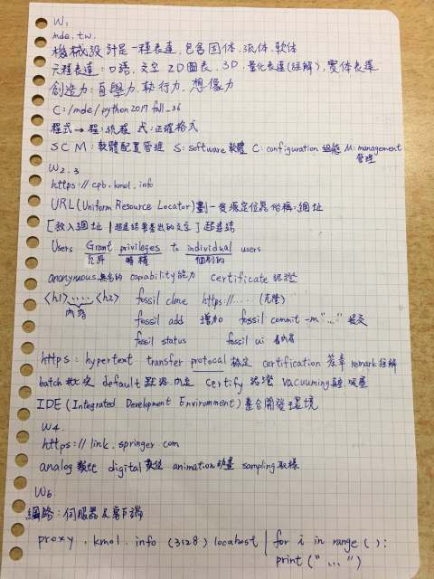
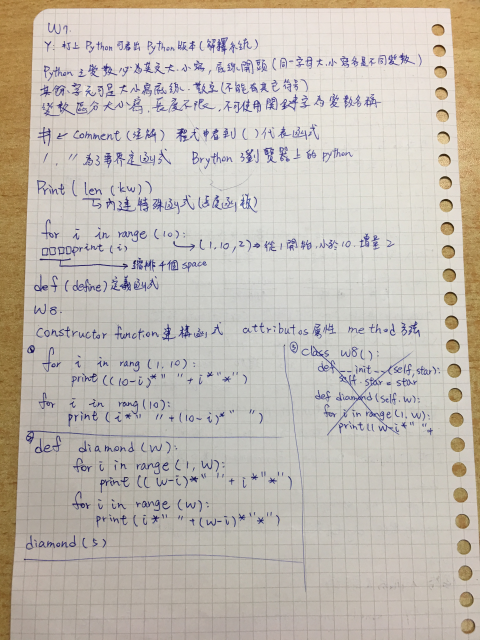
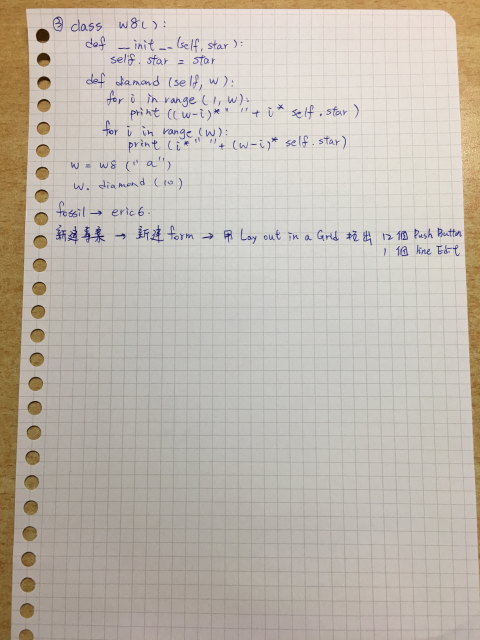

<!doctype html>
<html lang="en">
<head>
    <meta charset="utf-8">
<title>
2017 Spring 機械設計工程系網際內容管理
</title>
    <meta name="description" content="A framework for easily creating beautiful presentations using HTML">
    <meta name="author" content="Hakim El Hattab">
    
    <meta name="apple-mobile-web-app-capable" content="yes">
    <meta name="apple-mobile-web-app-status-bar-style" content="black-translucent">
    
    <meta name="viewport" content="width=device-width, initial-scale=1.0, maximum-scale=1.0, user-scalable=no">
    
    <link rel="stylesheet" href="data/reveal/reveal.css">
    <link rel="stylesheet" href="data/reveal/black.css" id="theme">
    
    <!-- Theme used for syntax highlighting of code -->
    <link rel="stylesheet" href="data/reveal/zenburn.css">

    <!-- Printing and PDF exports -->
    <script>
        var link = document.createElement( 'link' );
        link.rel = 'stylesheet';
        link.type = 'text/css';
        link.href = window.location.search.match( /print-pdf/gi ) ? 'data/reveal/pdf.css' : 'data/reveal/paper.css';
        document.getElementsByTagName( 'head' )[0].appendChild( link );
    </script>

    <!--[if lt IE 9]>
    <script src="data/reveal/html5shiv.js"></script>
    <![endif]-->
</head>

<body>
<div class="reveal">
<!-- Any section element inside of this container is displayed as a slide -->
<div class="slides">
<section data-markdown>
    <script type="text/template">
### 虎科大機械設計工程系
###四設計一乙 40623210 翁嘉宏
####w1~w8期中報告


</small>

[40623210 課程網誌](https://cpb.kmol.info/40623210/doc/trunk/blog/index.html)


    </script>
</section>


						
<section data-markdown>
    <script type="text/template">
# W1~W3
* 開啟隨身系統:點擊 python2017fall_36 目錄中的 start.bat 開啟
* 更改倉儲密碼、標準時間以及wiki使用方法。
* clone 4052倉儲再利用fossil open打開克隆下來的檔案，
   複製到自己的資料夾後再用fossil add及fossil commit推到自己的倉儲。
* 學習到 fossil clone(克隆) fossil open(打開壓縮檔案) mkdir(新建資料夾) 
   fossil add .(增加全部) fossil commit -m" "(提交).....這些指令 。
    </script>
</section>


						
<section data-markdown>
    <script type="text/template">
# W4~W8
* 使用SciTE打開Leo新增、編輯網誌，跑完近端及遠端後，
   使用隨身系統fossil add . 及 fossil commit -m" " 推上遠端。
* for 迴圈用法: for i in range( ): print(i) 利用for迴圈產生字串。
* 知道如何使用shareX錄製影片。 
* 使用eric6新建專案，拉出按鈕組成計算機介面。

    </script>
</section>


                        
<section data-markdown>
    <script type="text/template">
### 課堂筆記

    </script>
</section>


                        
<section data-markdown>
    <script type="text/template">
### 課堂筆記


    </script>
</section>


                        
<section data-markdown>
    <script type="text/template">
### 課堂筆記


    </script>
</section>

                        
<section data-markdown>
    <script type="text/template">
### 課堂筆記

    </script>
</section>

                        
<section data-markdown>
    <script type="text/template">
# 自評分數:70

    </script>
</section>


						
</section>
</div>

</div>

<script src="data/reveal/head.min.js"></script>
<script src="data/reveal/reveal.js"></script>
<script>
        // More info https://github.com/hakimel/reveal.js#configuration
        Reveal.initialize({
            controls: true,
            progress: true,
            history: true,
            center: true,

            transition: 'slide', // none/fade/slide/convex/concave/zoom

            // More info https://github.com/hakimel/reveal.js#dependencies
            dependencies: [
                { src: 'data/reveal/classList.js', condition: function() { return !document.body.classList; } },
                { src: 'data/reveal/marked.js', condition: function() { return !!document.querySelector( '[data-markdown]' ); } },
                { src: 'data/reveal/markdown.js', condition: function() { return !!document.querySelector( '[data-markdown]' ); } },
                { src: 'data/reveal/highlight.js', async: true, callback: function() { hljs.initHighlightingOnLoad(); } },
                { src: 'data/reveal/zoom.js', async: true },
                { src: 'data/reveal/notes.js', async: true },
                { src: 'data/reveal/math.js', async: true }
            ]
        });
</script>
</body>
</html>

